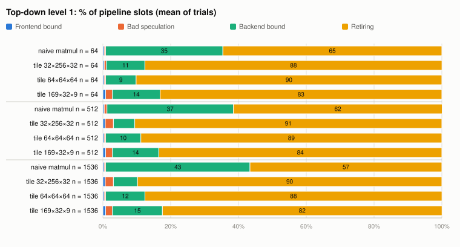

matmul_blocking() tiles all three loops: the outer loops step over BLOCK_SIZE_I × BLOCK_SIZE_K tiles of A and BLOCK_SIZE_K × BLOCK_SIZE_J tiles of B, accumulating into a BLOCK_SIZE_I × BLOCK_SIZE_J tile of a zero-initialised C; edge tiles are clipped, so any shape works. Inside a tile the loop order is i-k-j: A[i][k] is loaded once into a register and the innermost loop updates a row of C from a row of B with unit stride. The final tile size is 32 × 256 × 32 (Section 3).matmul_quant() unpacks 32 / QUANT_PRECISION elements per word with a shift and mask, most-significant first (the handout's 0x01020304 = [1, 2, 3, 4]); element e of A[i][k] multiplies row 4k + e of B. The dot product is accumulated in a 64-bit integer and cast to float.scaled_dot_product_attention() computes, per query row, the scores Q[i]·K[j] / √depth, a numerically stable softmax (max subtracted) and the weighted sum of the rows of V. The Lab 1 softmax() returns log-probabilities, so attention computes plain probabilities itself.convolution_im2col() (in the template, with a provided test) flattens the kernels over all channels, builds the im2col matrix, multiplies with matmul or matmul_blocking, reshapes with col2im, then adds the bias and applies ReLU.Testing. All 33 unit tests pass (make all_tests). Every hand-checked matmul case is also run through matmul_blocking, and blocking is compared with the naive result on shapes chosen to stress the edge-tile logic (smaller than one tile, exact multiples, and one past a tile boundary in every dimension), using small integer values so the different summation order cannot cause rounding differences. The provided quantization test uses 0x01010101, which cannot detect a reversed byte order, so I added the handout's example with distinct bytes, plus an incompatible-shape case. Every convolution test runs the direct, im2col-naive and im2col-blocking paths.
Harness. perf/profile.c (from Lab 1, extended) builds two random N × N matrices once with a fixed seed, then calls matmul or matmul_blocking iters times, freeing each result, and reports the wall-clock time per call (clock_gettime). Iteration counts (20 000, 20, 1 for N = 64, 512, 1536) keep every run at 4.6–16 s, so the function under test dominates; an iters = 0 run of each configuration measures setup alone. Its profile is nothing like the kernels' (at N = 64: 29 % Frontend Bound and 15 % Bad Speculation, against ≤ 0.8 % and ≤ 2.4 % for every kernel run), so without the repetition loop it would distort the results. Setup is short, however: the whole iters = 0 program takes 0.11 s at N = 1536 (time, real), i.e. ≤ 1.8 % of any run, and less at smaller N. The sizes bracket the cache hierarchy of the profiling node (48 KB L1d, 2 MB L2 per core, 30 MB L3 per socket): the three 64 × 64 matrices total 48 KB, the 512 case 3 MB (beyond L2), and the 1536 case 27 MB (about the L3 size). Tile sizes are compile-time macros, so perf/sweep_tiles.sh builds one binary per configuration with -DBLOCK_SIZE_I/J/K.
Measurement. Every run is a separate SLURM job on the Sapphire Rapids ece5755 node (Xeon Silver 4514Y; SMT disabled). The program is pinned to the core SLURM assigned to the job, and toplev.py -l1|-l2 -v --no-desc --force-cpu spr --core S<s>-C<c> counts only that core (perf/on_core.sh, perf/run_toplev.sh). The runtime sweep ran each of 5 variants × 3 sizes twice; Top-down data was collected for naive and three tile configurations at levels 1 and 2, twice each, and averaged by perf/summarize.py. Every level-1 and level-2 run reported MUX = 100 % (no counter multiplexing), the standard deviation of Backend Bound across trials is at most 1.1 percentage points, and runtimes under toplev match the uninstrumented sweep within 1.5 %. Runtimes are the real/wall-clock time of the timed loop; the two trials agree within 1.5 % in 13 of 15 cases (2.7 % and 5.4 % for 32 × 32 × 32 and 32 × 256 × 32 at N = 64).
| Implementation (tile I × J × K) | N = 64 | speedup | ns/MAC | N = 512 | speedup | ns/MAC | N = 1536 | speedup | ns/MAC |
|---|---|---|---|---|---|---|---|---|---|
naive matmul (Lab 1) | 796 µs | 1.00 | 3.04 | 420.3 ms | 1.00 | 3.13 | 12.32 s | 1.00 | 3.40 |
| 169 × 32 × 9 (template default) | 507 µs | 1.57 | 1.93 | 256.2 ms | 1.64 | 1.91 | 6.96 s | 1.77 | 1.92 |
| 32 × 32 × 32 | 496 µs | 1.61 | 1.89 | 251.0 ms | 1.67 | 1.87 | 6.84 s | 1.80 | 1.89 |
| 64 × 64 × 64 | 459 µs | 1.74 | 1.75 | 237.5 ms | 1.77 | 1.77 | 6.44 s | 1.91 | 1.78 |
| 32 × 256 × 32 (submitted) | 479 µs | 1.66 | 1.83 | 229.4 ms | 1.83 | 1.71 | 6.18 s | 1.99 | 1.71 |
matmul, and time per multiply-accumulate. Working set (A + B + C): 48 KB, 3 MB and 27 MB. All builds use the provided Makefile flags (-O0).
matmul is the baseline in each group.| N | Implementation | Retiring | light ops | Backend | BE: Core | BE: Memory | Bad spec. | Frontend | retired µops per MAC (rel.) |
|---|---|---|---|---|---|---|---|---|---|
| 64 | naive | 64.6 | 62.2 | 34.6 | 34.6 | 0.0 | 0.4 | 0.4 | 1.25 |
| 169 × 32 × 9 | 83.7 | 80.2 | 13.3 | 12.8 | 0.6 | 2.2 | 0.8 | 1.02 | |
| 64 × 64 × 64 | 89.8 | 85.9 | 9.4 | 8.8 | 0.6 | 0.4 | 0.4 | 1.00 | |
| 32 × 256 × 32 | 87.1 | 83.5 | 12.0 | 10.0 | 2.0 | 0.6 | 0.4 | 1.00 | |
| 512 | naive | 61.6 | 59.6 | 37.3 | 37.3 | 0.0 | 0.8 | 0.4 | 1.25 |
| 169 × 32 × 9 | 83.9 | 80.3 | 13.4 | 13.0 | 0.4 | 2.0 | 0.8 | 1.04 | |
| 64 × 64 × 64 | 88.9 | 85.0 | 10.4 | 10.0 | 0.4 | 0.4 | 0.4 | 1.01 | |
| 32 × 256 × 32 | 91.0 | 87.1 | 5.9 | 5.5 | 0.4 | 2.4 | 0.7 | 1.00 | |
| 1536 | naive | 56.6 | 54.7 | 42.6 | 41.4 | 1.2 | 0.4 | 0.4 | 1.25 |
| 169 × 32 × 9 | 82.8 | 79.2 | 14.6 | 14.2 | 0.4 | 2.0 | 0.8 | 1.04 | |
| 64 × 64 × 64 | 88.0 | 84.1 | 11.2 | 10.8 | 0.4 | 0.4 | 0.4 | 1.01 | |
| 32 × 256 × 32 | 89.8 | 85.9 | 7.1 | 6.7 | 0.4 | 2.4 | 0.7 | 1.00 |
Where the speedup comes from. Time per MAC is proportional to (µops per MAC) ÷ (fraction of slots that retire), so the speedup splits into two factors. (1) Fewer µops: naive matmul retires 1.25× more µops per MAC than any blocked variant, at every size (Table 2). At -O0 its inner loop reloads the row pointer B[k], and loads and stores sum and k through the stack on every iteration; the blocked inner loop has a, B_row and C_row hoisted out of it. (2) Fewer stalled slots: naive is 35–43 % Backend Bound, almost all Core Bound, because every iteration adds into the same sum: each multiply-add must wait for the previous add and for sum to be stored and reloaded, so iterations cannot overlap (Lab 1 found the same chain). In the i-k-j tile loop consecutive iterations update different C[i][j] and are independent, so the out-of-order core overlaps them and Core Bound falls to 5.5–14 %, with Retiring up to 89–91 %. At N = 1536 the two factors multiply to the measured speedup of 32 × 256 × 32: 1.25 × (89.8 / 56.6 = 1.59) = 1.98×.
Blocking wins even when everything fits in L1. At N = 64 the whole working set (48 KB) fits in L1d, so tiling has no capacity misses to remove, yet every blocked variant is 1.57–1.74× faster. The whole gain at this size comes from the two factors above, i.e. from the loop structure that tiling forces, not from cache reuse.
Growing inputs: naive slows down, blocking does not, but not because of Memory Bound. The naive cost per MAC rises from 3.04 to 3.40 ns (+12 %) from 48 KB to 27 MB, while 32 × 256 × 32 stays at 1.71 ns from N = 512 to 1536, so the speedup grows (1.66× → 1.83× → 1.99×). The naive inner loop walks B down a column, touching a new cache line on every access. At N = 512 the lines of one column (512 × 64 B = 32 KB) fit in L1d and are reused by the next 15 columns; at N = 1536 they need 96 KB, so every access misses L1 and is served from L2, and all 9 MB of B is re-streamed from L3 once per row of A (≈1.2 GB/s). The blocked version instead keeps a 32 × 256 tile of B (32 KB) in L1d while all 32 rows of the A tile reuse it. Yet Top-down shows Memory Bound ≤ 1.2 % for every naive run: the extra time appears as Core Bound (34.6 → 37.3 → 41.4 %). Because each load's address does not depend on the sum chain, the prefetchers and out-of-order execution can issue the column loads early, and their L2 latency is mostly hidden behind the much longer accumulator chain; what remains shows up as the chain waiting rather than as cycles with loads outstanding. Level 3 agrees. It needs more events than the core has counters, so toplev multiplexes them (MUX = 8 % for the full tree and 19 % with only the Backend subtree), and absolute values are unreliable; but two independent runs give consistent level-3 values (pairs below). Naive's Core Bound is Ports_Utilization: 19.9/19.2 % of clocks at N = 64 and 20.9/19.2 % at N = 1536, with Divider ≈0, i.e. cycles in which few execution ports are busy because µops wait on the dependency chain; blocking cuts it to 4.9/3.5 %. Memory stalls appear only for naive at N = 1536 (L2 Bound 1.2/1.2 %, L3 Bound 3.0/3.3 %, both 0 at N = 64), matching the column walk re-streaming B from L3; the blocked version shows none beyond 1.5/1.5 % L1 Bound. That is the cache benefit of tiling, but at -O0 it is second-order.
Tile shape. The template default 169 × 32 × 9 is the slowest blocked variant at every size. With K = 9 and J = 32, each tile performs only 9 × 32 multiply-adds per row of A before the loop nest moves on, so loop control (which at -O0 loads and stores every counter through memory) is a larger share of the work: it retires 2–4 % more µops per MAC than 32 × 256 × 32 (Table 2) and has the highest Core Bound of the blocked variants (12.8–14.2 %), since the partial sums in C are re-read and re-written N/9 instead of N/32 times. 64 × 64 × 64 (three 16 KB tiles, exactly the 48 KB L1d) is best at N = 64; 32 × 256 × 32 is best for the larger inputs, where its 256-wide inner loop runs longest without loop-control interruptions (Core Bound 5.5–6.7 %, Retiring 90–91 %). At N = 64 its J tile is clipped to 64, which removes that advantage. Bad Speculation stays ≤ 2.4 % for every variant.
matmul_blocking vs. matmul. The submitted 32 × 256 × 32 version is 1.66–1.99× faster than the Lab 1 matmul, and the bottleneck moves from Core Bound on the sum dependency chain (35–43 % of slots) to almost pure Retiring (≈90 %): the pipeline is now busy nearly every cycle, so the remaining cost is the number of µops itself. Most of them are -O0 overhead: 86 % of slots are light operations, and at level 3 memory operations (loads and stores of loop counters, pointers and the B/C elements) are the largest share of them, while floating-point arithmetic is only ≈10 % of retired µops. So the next step is -O2 and vectorisation (AVX-512 would do 16 multiply-adds per instruction). Only then would the kernel run fast enough for the memory hierarchy to matter, and the cache reuse that blocking provides (versus naive's column walk) would turn from a secondary effect into the main one.
taskset -c 0 with --core S0-C0. During this lab other students' jobs occupied core 0, so taskset failed with "Invalid argument" for some runs. Requesting the whole node (srun --exclusive) fixed that but each run then waited ≈20 minutes in the queue. Instead, each job now reads its allowed CPUs, pins to that CPU and passes the matching S<socket>-C<core> to toplev (the CPU number is not the core ID: CPU 4 is core S0-C7). A check run reproduced the Lab 1 profile of naive matmul at N = 64 (Backend 34.6 %, Retiring 64.6 %) and its runtime within 0.04 % of an exclusive run. Other jobs still share the L3 and memory bandwidth, which is why every configuration was run twice.softmax() would have produced log-probabilities and failed the attention test.scp -r from Windows left the server directories read-only (fixed with chmod -R u+w); the cluster has no matplotlib, so charts are generated as SVG with the Python standard library.